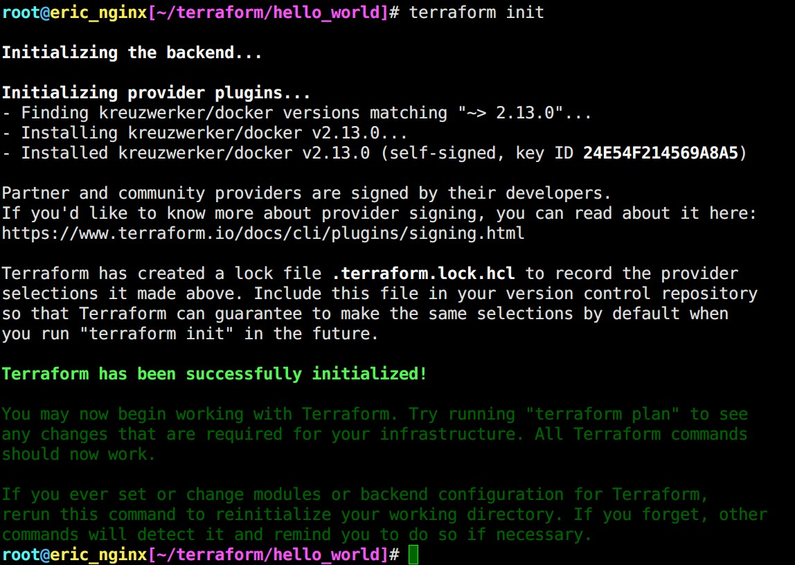

我的第一支 Terraform
Contents
Terraform 是一款 Infrastructure as Code (IaC) 工具，以 code 來 定義 / 建造 (build) / 修改 (change) / 版本控制 (version) 基礎設施，支援地端 (on-prem) 與 雲端 (Cloud)。
安裝 Terraform CLI
|
|
|
|
Terraform Hello World using Docker provider
這邊會使用 Docker 來跟 Terraform 說 Hello~
建立工作目錄
Terraform 設定檔 (configuration) 必須被放在自己的工作目錄下 (working directory)
|
|
main.tf
|
|
terraform Block 解釋
terraform {} 區塊設定 Terraform 相關設定，包含所需要的 provider。 各個 provider 下面的 source 定義 Terraform 要從 Terraform Registry 安裝。
例如範例的 kreuzwerker/docker 就等同於 registry.terraform.io/kreuzwerker/docker。
另外 version 雖然是 optional，不過官方建議加上，藉此約束 provider 的版本。 如果使用者沒有定義，在 init 階段 Terraform 會自動下載最新版 (most recent version)。
provider Block 解釋
|
|
provider 區塊定義特定 provider 的參數，例如: AWS 的相關 token
provider 可以把他當作 Terraform 的 plug-in，Terraform 利用這些 plug-in 去管理資源。
▲ 當工作目錄下只有 .tf (主設定檔) 而尚未進行 terraform init 時，執行 terraform validate 會出現 Error。
並且告知 Plugins are external binaries that Terraform uses to access and manipulate resources.
plug-in 是外部二進制檔案
resource Block 解釋
resource 格式:
> 其中 <resource_type> 前綴會帶有 prodvider 的字樣。
> <resource_type> + <resource_name> 會形成一個獨特的 ID，以下面這個例子就是 aws_instance.app_server。
|
|
resource 是定義 provider 提供的 「元件」(components) 的地方，可以是實體的 (physical) 或著虛擬的 (virtual)。
Initialize the directory 初始化目錄
terraform init 有點類似 gcc 編譯，執行後做了這兩件事情:
- 下載/安裝
.tf內定義的provider在$(pwd)/.terraform裡面。 - 創建一個
.terraform.lock.hcllock file，裡面定義正在使用的provider版本。

.terraform.lock.hcl 檔案內容 不要手動去更改!
|
|
Format and validate the configuration 正規化/驗證 設定檔
Format and validate the configuration
|
|
將 .tf 正規化 (formating)，使設定檔可讀性更高、更嚴謹。只有被更動的設定檔會被顯示出來
|
|
▲ 驗證語法
Create infrastructure 創建基礎設施
在執行 terraform apply 後 並不會馬上執行 ，Terraform 會先列出 「執行清單」(execution plan)
輸出內容與 git diff 頗為相似， + 項目會被 Terraform 創建。
known after apply 代表這個數值將在物件建立後才能取得。
▲ 輸入 yes 才會開始執行。
▲ 建立成功!
▲ 工作目錄下多出 terraform.tfstate，裡面儲存 infra 的狀態。
Inspect state 查看狀態
terraform.tfstate 是 Terraform 唯一 追蹤由它建立的 resource 的方式，透過這個檔案去執行 update 或者 destory。
另外官方提醒 terraform.tfstate 通常含有 機敏資訊 sensitive information 建議儲存在 Terraform Cloud 或者 Terraform Enterprise (還敢業配阿)，我在 Docker 這個範例當中是沒有找到什麼啦~ 之後使用 vsphere provider 的時候再來看看裡面存了哪些資訊好了。
查詢當前狀態
|
|
列出所有 resource
|
|
Change Infrastructure
上半部我們使用 Terraform 建立了一個 Nginx Docker container，接下來我們要使用 Terraform 來修改它。
當使用者修改設定檔 (.tf) Terraform 會建立 「執行清單」(execution plan) 並且 只異動需要變更的部分，藉此滿足 desired state
(與 K8s 撰寫的 YAML 一樣都是在描述 desired state)
Update configuration 更新設定檔
首先先把 main.tf 裡面的 external = 8000 修改成 external = 8080。 接著 terraform apply
▲ Docker 無法直接修改 existed container，只能重新建立一個新的。
-/+代表 Terraform 會 destroy and recreate the resource，而不是原地修改。~代表 Terraform 會原地 (in-place) 修改。
Destroy Infrastructure 刪除 infra
|
|
▲ 成功刪除!
Define Input Variables 使用變數
到目前為止，我們所使用的 value 都是 hard-coded，在這個章節將介紹 Terraform variables。
首先在工作目錄下建立 variables.tf
|
|
接著修改 main.tf 裡面的 docker_container resource block，將 name = "tutorial" 修改成 name = var.container_name
|
|
▲ 成功建立 “EVG2603Container”
除了可以透過 variables.tf 來定義變數外，在 CLI 也可以 ( 優先權 > variables.tf )。
|
|
Query Data with Outputs 輸出
Terraform 除了可以 input variables 也可以 output variables。
在工作目錄下建立 outputs.tf
|
|
outputs.tf 必須先被 terraform apply
▲ “Changes to Outputs”
成功之後我們就可以使用 terraform output 來查詢變數
|
|
保持帥哥
抱歉，段落標題詐騙 這個段落主要是要讓「機敏資訊」(sensitive data) 不要被直接存在 main.tf 裡面。
如此一來 main.tf 就能夠安心上版控工具了，不然 provider 相關帳號密碼都直接存在 main.tf 裡面上了版控豈不是裸奔嗎?
Protect Sensitive Input Variables
從 Terraform v0.14 後提供 sensitive 這個 variable flag，達成 (√) CLI output 不顯示明文密碼
注意!! 你的密碼還是以 plain text 的形式儲存在 .tfvars 裡面。建議使用 secret management tool 加以處理。
Hands-on
main.tf (沿用上面範例，確保 name = var.container_name 即可)
|
|
variables.tf (將 default 移除，新增 sensitive = true )
|
|
新增 secret.tfvars 絕對要在 .gitignore 裡面!!
|
|
執行 terraform apply -var-file="secret.tfvars" 就不會以明文顯示 container_name 囉!
發問
|
|
Ans: 使用 tmux scroll buffer ( Ctrl-B + [ + PageUp/Down )
Author 老柯
LastMod 2021-09-22